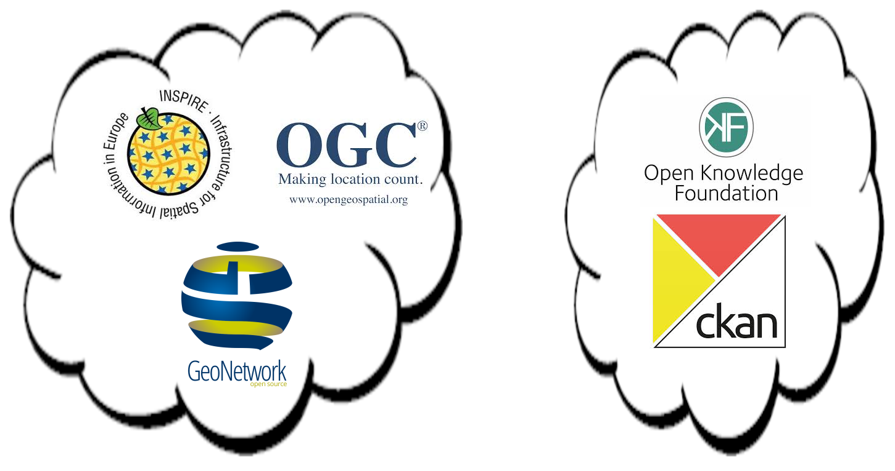
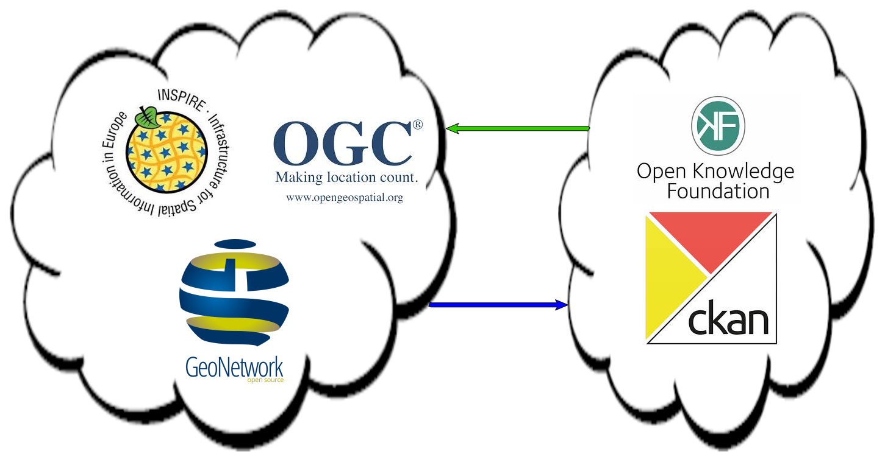

Crowd-data, open-data, linked-data
y cómo seguir usando INSPIRE
Quienes somos
- Dos universos separados
- Publicamundi
- GeoNetwork
Dos universos separados
Dos universos separados
Tesauro <-> Linked Data
Harvesting <-> Linking
Estricto <-> Blando

Dos universos separados
- Dos universos separados
- Publicamundi
- GeoNetwork
Qué es Publicamundi
- Extensión geográfica CKAN
- ZOO Project
- OWSLib (librería python para servicios OGC)
- pyCSW
- geoServer
- Rasdaman
- ... y todo en Github
El catálogo de metadatos de Publicamundi
Editor de metadatos
INSPIRE a través de pyCSW
Internamente: formato CKAN
Transformación entre esquemas
- Dos universos separados
- Publicamundi
- GeoNetwork
GeoNetwork
- RDF basado en DCAT
- ISO19139
- ISO19110
- Dublin Core
- Endpoints:
- Metadata service:
http://.../rdf.metadata.get?uuid=$uuid - Search service:
http://.../rdf.search?
- Metadata service:
Y eso es todo
¿Dudas, preguntas, sugerencias, críticas destructivas?